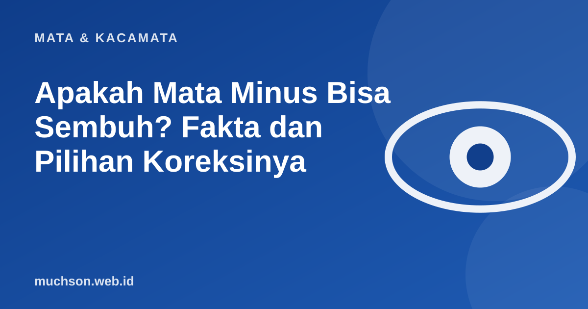

Beranda › Artikel › Mata & Kacamata
Mata & KacamataApakah Mata Minus Bisa Sembuh? Fakta dan Pilihan Koreksinya
"Apakah mata minus bisa sembuh?" adalah salah satu pertanyaan paling sering diajukan di optik. Jawaban jujurnya: pada kebanyakan kasus, minus tidak bisa dikembalikan seperti semula dengan latihan atau makanan tertentu. Tetapi minus bisa dikoreksi dengan sangat baik, dan pada anak, kenaikannya bisa diperlambat. Artikel ini menjelaskan kenapa.

Kenapa mata menjadi minus?
Pada mata minus (miopia), bayangan benda jauh jatuh di depan retina, bukan tepat di atasnya. Penyebab paling umum adalah bola mata yang tumbuh terlalu panjang ke belakang. Karena masalahnya ada pada ukuran dan bentuk bola mata, minus tidak bisa "dilatih hilang" seperti otot yang lemah.
Penelitian memperkirakan jumlah penderita miopia di dunia terus naik. Holden dan rekan (2016) memproyeksikan sekitar separuh penduduk dunia akan mengalami miopia pada 2050, dengan peran besar faktor gaya hidup: berkurangnya waktu di luar ruangan dan meningkatnya aktivitas jarak dekat.
Koreksi bukan berarti sembuh
| Pilihan | Cara kerja | Apakah "menyembuhkan"? |
|---|---|---|
| Kacamata | Lensa minus menggeser fokus ke retina | Tidak; mengoreksi selama dipakai |
| Lensa kontak | Sama seperti kacamata, menempel di kornea | Tidak; mengoreksi selama dipakai |
| Bedah refraktif (LASIK dan sejenisnya) | Mengubah bentuk kornea agar fokus tepat di retina | Menghilangkan kebutuhan kacamata pada banyak orang, tetapi panjang bola mata tidak berubah |
| Ortho-K (lensa malam) | Lensa kaku dipakai saat tidur, membentuk sementara kornea | Efeknya sementara, hilang bila dihentikan |
Setelah LASIK, penglihatan bisa tajam tanpa kacamata. Namun karena bola mata tetap panjang, risiko kondisi yang berkaitan dengan miopia tinggi (misalnya pada retina) tidak hilang. Pemeriksaan mata rutin tetap penting.
Bagaimana dengan anak? Bisa diperlambat
Pada anak, minus biasanya terus naik selama masa pertumbuhan. Kabar baiknya, kenaikannya bisa diperlambat:
- Waktu di luar ruangan. Uji klinis di Guangzhou, Tiongkok (He dan rekan, 2015) menambah kelas luar ruangan 40 menit per hari di sekolah. Setelah 3 tahun, kejadian miopia baru lebih rendah (30,4% dibanding 39,5%). Efeknya sedang, tetapi murah dan sehat.
- Istirahat dari aktivitas dekat, misalnya aturan 20-20-20 saat membaca atau memakai gawai.
- Penanganan oleh dokter mata: tetes atropin dosis rendah, lensa kacamata atau lensa kontak khusus pengendali miopia, atau ortho-K. Pilihan ini harus diresepkan dan dipantau tenaga ahli.
Klaim yang perlu diwaspadai
Tanya jawab
Apakah mata minus bisa sembuh total?
Apakah LASIK menyembuhkan minus?
Apakah minus anak bisa diperlambat?
Apakah memakai kacamata membuat minus bertambah?
Sumber dan bacaan lanjut
- Holden, B. A. dkk. (2016). Global prevalence of myopia and high myopia and temporal trends from 2000 through 2050. Ophthalmology
- He, M. dkk. (2015). Effect of time spent outdoors at school on the development of myopia among children in China. JAMA
- WHO: World report on vision (2019)
- Minus anak cepat bertambah: cara memperlambatnya (artikel terkait)